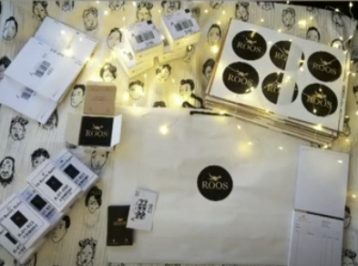

Founding a sustainable label that put 1,000 women back in their own wardrobes.
I started ROOS India out of undergrad with no budget, no investors, and one conviction: that upcycled fashion did not have to look like a compromise.

India's fashion industry produces waste at scale. Consumers were ready to care, if someone made it easy.
India is one of the world's largest textile producers and also one of the largest generators of textile waste. The average urban household accumulates garments that are worn once or twice, stored indefinitely, and eventually discarded, not because they are worn out, but because they no longer feel relevant.
I started ROOS India in 2019 as a final-year undergrad with a specific hypothesis: that the sustainable fashion market was failing because it prioritised ethics over aesthetics. Consumers were not unwilling to buy sustainably. They were unwilling to buy ugly things. If you solved the design problem, the sustainability story would carry itself.
Upcycled fashion had an identity problem, not a supply problem.
The upcycled garment space in India was populated by brands that led with guilt. Packaging that reminded you how much waste you were preventing. Marketing that positioned the buyer as a responsible citizen rather than someone with good taste. The implicit message: you are buying this despite how it looks, not because of it.
This was the wrong frame. It created a customer who bought once to feel good and never came back. It also capped the price point. If the value proposition is moral rather than aesthetic, the customer compares you to a charity, not a fashion label.
The real opportunity: invert the proposition entirely. Lead with desirability. Let sustainability be the proof point that makes the desirability feel guilt-free, not the reason to tolerate an undesirable product.
"The garment you forgot you owned is exactly what someone else would love to wear. The problem is not supply. It is curation."
The brand positioning that shaped every product and communication decision
Source from the customer. Rework for a different customer. Build a community around the transaction.
ROOS operated a customer-sourced supply chain. Women submitted unused garments from their own wardrobes (sarees, kurtas, dupattas, western separates) which we assessed, accepted, and reworked into contemporary silhouettes. The original owner received store credit. A new buyer received something they could not find elsewhere.
This model solved two problems at once. It eliminated raw material cost (the biggest input for a bootstrapped label) and it created a community dynamic. Submitters had skin in the game, which turned them into advocates. The person who sent in a saree told her friends when she saw it transformed into a jacket. That word-of-mouth was the acquisition channel.
The brand identity was designed to compete with premium D2C labels, not charity shops. Photography, packaging, and copy were held to the same standard as a mid-market fashion brand. The sustainability story appeared once the customer was already interested, not as the hook, but as the satisfying reveal.
Built end-to-end: supply chain, brand, distribution, community.
I ran every function: garment sourcing and quality assessment, rework briefing with tailoring partners in Mumbai, product photography, copywriting, Etsy storefront management, Instagram content, and community management across WhatsApp groups where the repurposing community lived.
Distribution was multi-channel from the start. Etsy provided international discovery at zero acquisition cost, with the platform's algorithm surfacing handmade and vintage goods to buyers actively looking for them. Instagram served as the primary brand channel and DM-based ordering system for Indian customers. Physical showcases, including a curated pop-up at Khar Gymkhana in Mumbai, provided the tactile proof point that upcycled could mean beautiful.
The Khar Gymkhana event was the first moment the community saw the full ROOS vision in person. It converted observers into buyers and buyers into community members, and the WhatsApp group grew by 40% in the week following the pop-up.
Revenue, community, and a replicable model: all bootstrapped.
ROOS generated Rs 5L+ in revenue from a standing start, with zero external capital. More than 500 garments were sold pan-India, with international orders via Etsy to the UK, US, and UAE. The repurpose community grew to 1,000+ women actively submitting garments, sharing transformations, and referring new members.
The Etsy channel achieved a zero paid CAC: every sale came through organic platform discovery or community referral. Return customer rate among Indian buyers was above 35% over the 18-month active period, which is significantly above benchmark for a single-category fashion brand.
The model proved that desirability-first sustainable fashion could work at the unit economics level without VC funding or paid acquisition, a data point I have carried into every subsequent role when evaluating growth strategy.
Community is an asset. Treat it like one from day one.
The WhatsApp community was the most valuable thing ROOS built, more valuable than the Etsy storefront, the Instagram following, or any individual product. But it was built reactively, not intentionally. I did not instrument it, I did not have an explicit strategy for it, and when ROOS paused operations for me to pursue graduate education, the community dissipated faster than it should have.
If I rebuilt ROOS today, the community infrastructure would be the first thing I designed, with clear onboarding, content cadence, and a structure that could survive my absence. The lesson: informal communities are fragile; designed communities are durable. The engagement was there. The architecture was not.